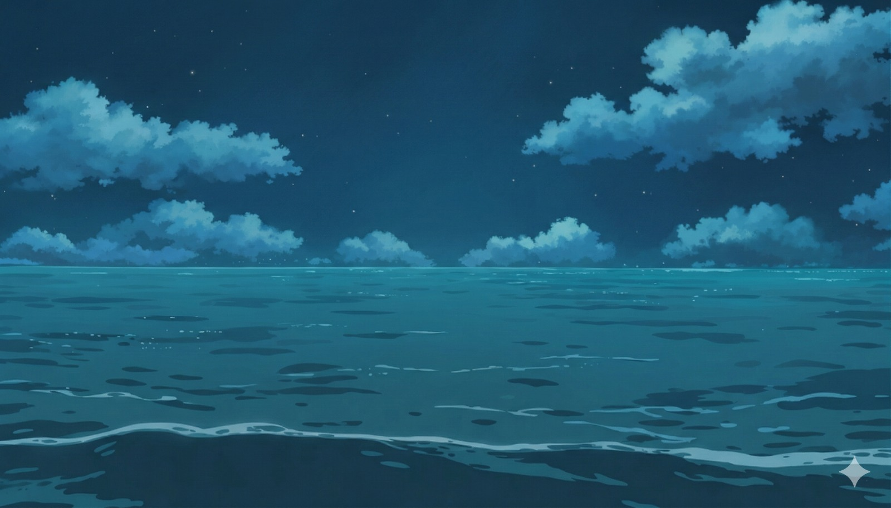

Life Below Water — SDG 14
The ocean is speaking... but are we listening?
Entering site in 4
Sustainable Development Goal 14 · Life Below Water
Exploring how individuals, communities, and students can take real action to protect and restore our ocean ecosystems before it is too late.